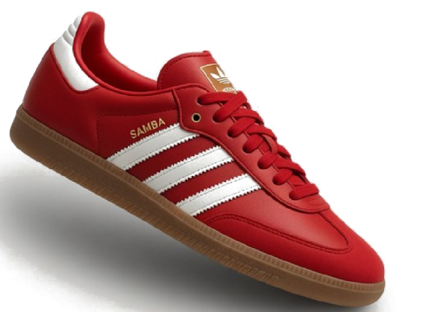

Warm studio light
Soft shadows, stacked wood and palm-leaf light. The kind of calm that makes a pair of loafers look like they’ve been around since 1987.
أحمد أبوبكر
Ads, packaging and 3D characters, made in Cairo


I make ads, packaging and 3D characters,
and I still read old Egyptian magazines for fun.
My work changes outfits depending on the brief, but it always has the same habit: every piece has to sell something and tell a story. Here’s what that looks like.
Soft shadows, stacked wood and palm-leaf light. The kind of calm that makes a pair of loafers look like they’ve been around since 1987.

Wordmarks that wobble, split into two colours and refuse to sit still. Built to be read across a café or in half a second of scrolling.

Rusty workshops lit by cyan screens, and characters who have a reason to be there. Every bolt on the floor has a backstory.
I dig through old Egyptian magazines and comics for lettering, colour and the way they spoke to readers, then bring that back into new work.
Make it sell. Make it mean something. Make it shine.